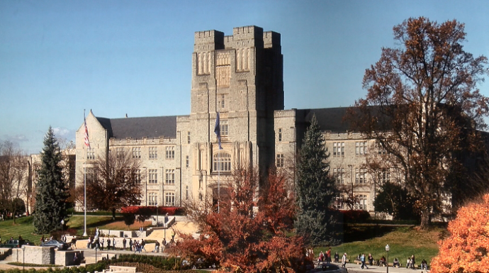

My Semester at Virginia Tech
I have really enjoyed my fall semester. As a junior, I feel I am now taking classes that are incredibly practical for when I enter the field of PR or the fashion industry in the future. I have learned all kinds of writing, editing, media, and merchandising math skills. I have also had the opportunity to complete an internship with a Christiansburg non-profit. I have been able to use a lot of what I have learned this semester to become a valuable public relations intern.
I welcome you to take a closer look into my classes and my professors!
